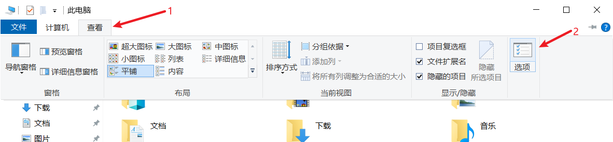
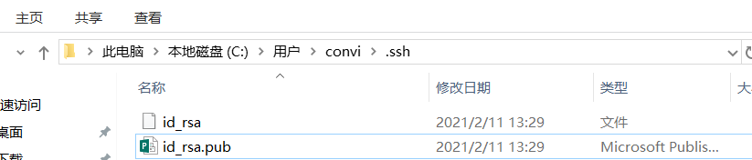
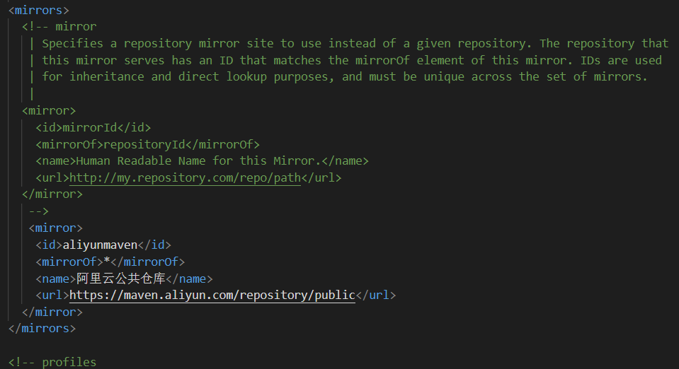

基本配置情况
首先码一下我的机器配置：
系统：Windows 10
CPU：i5-9300H
内存：32GB
GPU：RTX 2060
磁盘：一块 512GB 的三星 PM981A 固态（C盘分128GB，剩余容量为D盘） + 一块 1TB 西数机械硬盘（E盘）
开始
首先是磁盘的分配：
- C盘不用去管它，尽量不把数据存进去
- D盘用来安装软件。由于D盘是固态，可以用来安装软件或者游戏，不会损失性能。安装软件时选择自定义安装，手动指定安装位置。这很简单，只需要把安装位置中的
C:改为d:即可，不用做其他操作。另外，编程环境也适合放在这里。 - E盘用来存放软件产生的数据，比如微信和QQ的聊天数据以及各种下载的数据（包括浏览器，迅雷，百度网盘等下载的数据）
然后是根据磁盘的分配得到的文件目录（目录名特别是编程相关的尽量别出现汉字）：
1 | D:/ |
另外，我们平时习惯在桌面上存放各种资料，而桌面一般都位于C盘，为了减少C盘的使用，下面我们将桌面移动到D盘：
首先打开此电脑（Win+E键快捷打开）：
- 在 查看–>选项–>打开文件资源管理器时打开选择：此电脑（这一步非必须，个人习惯）

打开此电脑（Win+E键快捷打开），右键“桌面”–>属性–>位置–>
C改为D–>敲三下回车键其他的文件夹同理也可以移动到D盘
编程环境
C/C++
我使用的编译器是Mingw-64自带的gcc，但是其官网以及SourceForge更新较慢，因此我采用的是WinLibs，其download 页面提供 GCC + MinGW-w64 以及 GCC + LLVM/Clang/LLD/LLDB + MinGW-w64 的下载，版本较新，可以自取所需。
下载后解压至 D:\CodeEnv目录下，并将D:\CodeEnv\mingw64\bin添加进 环境变量–>系统变量–>Path目录下即可。可使用 gcc --version 和 g++ --version 进行验证：
Java
下载页面：JDK下载，我一般选择的是 JDK11，选择后缀名为*_windows-x64_bin.zip进行下载，然后同样解压至D:\CodeEnv目录下，将D:\CodeEnv\jdk-11.0.10\bin添加进 环境变量–>系统变量–>Path目录下，将 D:\CodeEnv\jdk-11.0.10 设置为新的系统变量 JAVA_HOME即可。可使用 java --version 进行验证：
Python
我使用的是Anaconda用来管理Python，下载页面是清华大学开源镜像站，速度会快一些。由于它也是编程环境，所以我将其安装在D:\CodeEnv\Anaconda3目录下。
安装完成后按照镜像使用帮助的步骤更改.condarc文件进行换源，换成国内源将会大大提高下载Python包的速度。
然后同样将D:\CodeEnv\Anaconda3以及 D:\CodeEnv\Anaconda3\Scripts 两个路径添加进 环境变量–>系统变量–>Path 目录下，可使用 python --version 进行验证：
下面列出一些常见命令，启动 Anaconda Prompt：
1 | conda update conda #升级conda(升级Anaconda前需要先升级conda)： |
例如，若想创建 TensorFlow2.0 并安装 CUDA 和 cuDNN 的环境：
1 | conda create --name tf2 python=3.8 # “tf2”是你建立的conda虚拟环境的名字 |
Git
下载地址：Git，按照提示安装即可。下面列一下 SSH key 的生成以及 Github 的连接：
首先配置用户名和邮箱，用户名和邮箱与你 Github 账号的一致，下面的 [your-name] 和 [your-email-address] 替换为你自己的用户名和邮箱。
1 | git config --global user.name "[your-name]" |
然后生成 SSH key：
1 | ssh-keygen -t rsa -C "[your-email-address]" |
这行命令执行后会问你若干问题，不用管它，一律回车就行。然后在你的用户目录（Windows是 C:\Users\[your-name]）下就会生成一个 .ssh 的文件夹，打开后有两个文件：id_rsa 和 id_rsa.pub，分别是私钥和公钥。

我们右键用记事本（或其他的编辑软件）打开公钥文件 id_rsa.pub ，并复制里面的全部内容。
打开 Github，找到 Settings –> SSH and GPG keys –> New SSH key–>在 Title 文本框中随便输入一个标题，并把刚才复制的内容复制到 Key的文本框中–> Add SSH key即可。
Mysql
下载地址：Mysql 下载
选择第一个，然后不用登录，点击 No thanks, just start my download.
同样解压至 D:\CodeEnv。
使用管理员打开命令行（右键开始菜单，选择Windows PowerShell（管理员））

依次执行下面的命令（mysql-8.0.23-winx64这个文件夹根据你自己的版本来改动）：
1 | cd d: |
如图：
此时 mysql 就已经安装好了，并且登录密码也改为了 1234.
接下来设置一下环境变量，将 D:\CodeEnv\mysql-8.0.23-winx64\bin 添加进 环境变量–>系统变量–>Path目录下，这样随意打开一个命令行窗口都可以通过 mysql -u root -p来登录 mysql 数据库了。
最后一步，关闭 mysql 的开机自启动。安装 mysql 服务之后，默认服务启动方式是自动启动，每次开机时，mysql 服务会自动启动，这样会消耗电脑内存，导致电脑运行缓慢。而我们并不是每次开机都需要使用 mysql 的。
首先打开服务列表：快捷键 Win+R 输入 services.msc（或者 右击我的电脑->管理->点击左侧服务和应用程序->服务），在服务列表里找到 Mysql，右键–>属性，将启动类型改为手动。
此时 mysql 就不会随着开机自启动，若想启动 mysql，只需使用管理员打开命令行窗口，输入net start mysql即可，关闭 mysql 服务可使用命令 net stop mysql。
MongoDB
下载地址：MongoDB Community Server，选择 zip 包进行下载：
同样，将其解压至 D:\CodeEnv，并将 D:\CodeEnv\mongodb-win32-x86_64-windows-4.4.3\bin添加进 环境变量–>系统变量–>Path 目录下。
在D:\CodeEnv\mongodb-win32-x86_64-windows-4.4.3目录下新建两个文件夹db 和 log，创建数据库和日志文件的目录。然后在该目录下创建一个配置文件 mongod.cfg，其中指定 systemLog.path 和 storage.dbPath。具体配置内容如下：
1 | systemLog: |
注意这些路径都是绝对路径，使用相对路径会报错。
接下来安装 MongoDB 服务，使用管理员打开命令行窗口（右键开始菜单，选择Windows PowerShell（管理员）），通过执行mongod.exe，使用–install选项来安装服务，使用–config选项来指定之前创建的配置文件。
1 | cd d: |
启动 MongoDB 服务：
1 | net start mongodb |
和 Mysql 一样，MongoDB 服务也是默认自启动的，也可以通过服务列表（快捷键 Win+R 输入 services.msc）来关闭它的自启动。之后通过管理员命令窗口输入 net start mongodb 和 net stop mongodb 来控制 MongoDB 服务的开启和关闭。
可以输入 mongo 来进入数据库的Shell界面：
maven
下载地址：maven 下载
选择最后一项，同样解压至 D:\CodeEnv，将 D:\CodeEnv\apache-maven-3.6.3 设置为新的系统变量 MAVEN_HOME。
然后对 maven 进行一些设置，打开D:\CodeEnv\apache-maven-3.6.3\conf\settings.xml，找到被注释掉的 localRepository，在下面加一行
1 | <localRepository>D:\CodeEnv\MavenRepository</localRepository> |
表示设置本地仓库位置为 D:\CodeEnv\MavenRepository，之后下载的 jar 包会保存在这里。
然后找到 <mirrors> 标签，在标签内加入：
1 | <mirror> |

换成国内阿里的源，下载速度会有所提升。
另，maven 的 jar 包可在 Maven Repository 中找到
软件的配置
微信
设置中把文件的存储位置改到E盘自己设置的目录下：
这样，微信的所有聊天文件都在E盘了，要找一些文件的时候可以直接去这个路径下面去找。
安装时自定义保存目录即可。
该目录也可以在进入软件后自行设置。
关于重置电脑
有些人认为重置电脑就意味着所有文件都删除，这是不对的。Win10可以仅仅删除C盘（安装了Windows的驱动器盘）的内容，这就意味着虽然所有的软件都被删除了，但是软件的数据（包括浏览器等的下载数据和聊天数据）只要不在C盘，就可以被保留下来。
所以微信和QQ的重要聊天数据请不要放在C盘，这样即使重置系统，所有的聊天记录也不会消失。在重新安装微信和QQ后，聊天记录的存储位置选择你原来数据的所在位置，软件就会提示你“有旧的数据，是否使用”，选择使用即可。